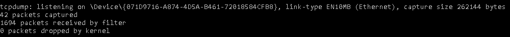
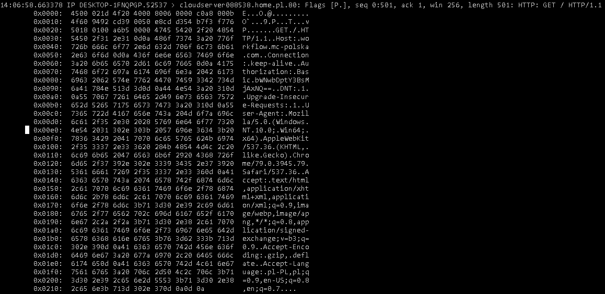

Jak to jest z tymi atakami ???
Sposoby podsłuchiwania sieci teleinformatycznych:
Warstwa łącza danych odpowiada między innymi, czy dana sieć pracuje jako sieć przełączana. Jeśli występuje sytuacja odwrotna pakiety ethernetowe zostają przekazane przez wszystkie urządzenia w sieci. Dzieje się tak ponieważ określone urządzenie bada tylko pakiety skierowane na dany adres docelowy. Jednak dużą część urządzeń możemy odpowiednio przestawić na tryb odbierania. Wtedy wpływ adresu docelowego nie jest znaczący. Oprogramowania takie jak tcpdump jest samo w stanie przestawić w ten sposób interfejs sieciowy. W systemach typu linux, polecenie ifconfig posiada tą samą funkcjonalność. Tryb podsłuchu pozwala uzyskać dostęp do danych gdzie znajdują się informację, które nie powinny być ujawniane publicznie, Sprawia to, że nasza sieć jest wystawiona na różne ataki.
TCPDUMP – Proste konsolowe oprogramowanie które potrafi podsłuchać port sieciowy na w naszym komputerze.
Przykład wykorzystania:

Polecenie:
tcpdump -i 2 -w zrzut.dmp tcp dst port 80
Polecenie:
tcpdump -xX -r zrzut.dmp
Następnie po chwili możemy zatrzymać podsłuch i zobaczymy co jest w środku:
